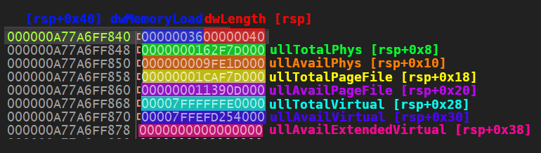

In the previous post, I explored a sandbox evasion technique that uses GetPhysicallyInstalledSystemMemory to check the size of the RAM of the machine. The idea behind this technique (MBC Technique ID: B0009.014) is that any value that is lower than 4GB may probably be a sandbox (to reduce costs). This information can then be used with other sandbox evasion techniques to confirm.
For part 2 of this series, I'll be talking about an alternative Windows API function called GlobalMemoryStatusEx. This function is as straightforward as the first one, but requires the passing of a pointer to a C struct. This is significant because I'll be converting a working C code to x64 assembly so we can fully understand how it works under the hood.
Using GlobalMemoryStatusEx
Here is an example of an implementation of GlobalMemoryStatusEx in C that we'll later be converting to x64 assembly.
#include <stdio.h>
#include <windows.h>
int main(void)
{
MEMORYSTATUSEX statex;
statex.dwLength = sizeof (statex);
GlobalMemoryStatusEx (&statex);
printf ("Memory size: %*I64d", 7, statex.ullTotalPhys/1024);
}
You will see that the first parameter for GlobalMemoryStatusEx is expecting a pointer to a MEMORYSTATUSEX object. We need to declare the memory location statex by putting it onto the stack. Before we can do that, however, we first need to know beforehand how much we would need to reserve.
Getting the size of the struct
Finding out the size of a structure in C is easy with the sizeof function. However, we can't really use this in assembly, so we have to determine it manually by adding up the sizes of each member of the struct.
Consider the example struct definition below:
struct TestStruct {
char member1;
int member2;
float member3;
};
If we would look at this table containing the fundamental types and their sizes, we could determine the sizes of each member:
member1 is of type char which has a size of 1 bytemember2 is of type int which is 4 bytesmember3 is of type float which also is 4 bytes
Adding all of these sizes results in TestStruct having a total size of 9 bytes.
Now to apply the same computation to our MEMORYSTATUSEX struct. Here is the definition of the struct according to MSDN:
typedef struct _MEMORYSTATUSEX {
DWORD dwLength;
DWORD dwMemoryLoad;
DWORDLONG ullTotalPhys;
DWORDLONG ullAvailPhys;
DWORDLONG ullTotalPageFile;
DWORDLONG ullAvailPageFile;
DWORDLONG ullTotalVirtual;
DWORDLONG ullAvailVirtual;
DWORDLONG ullAvailExtendedVirtual;
} MEMORYSTATUSEX, *LPMEMORYSTATUSEX;
The types that we have are DWORD and DWORDLONG (which is just Window's own version of unsigned long and unsigned int64):
DWORD or unsigned long has a size of 4 bytesDWORDLONG or unsigned int64 has a size of 8 bytes
So adding the two DWORDs and seven DWORDLONGs results in MEMORYSTATUSEX having a total size of 64 bytes.
Initializing statex
Now that we know the total size, we can now reserve this amount of space on the stack.
sub rsp, 0x40 ; Reserve space for struct on stack
; MEMORYSTATUSEX's is 64 bytes (0x40) in size
Before we can call GlobalMemoryStatusEx, however, MSDN states that the dwLength member should be first set. And this can be done by assigning 64 bytes to the corresponding memory location on the stack.
mov rax, 0x40
mov [rsp], rax ; Assign 0x40 to dwLength
lea rcx, [rsp] ; Load the memory location of struct
With this we can finally call our function:
sub rsp, 32 ; Reserve shadow space
call GlobalMemoryStatusEx
add rsp, 32 ; Release shadow space
Using the result
If successful, the function GlobalMemoryStatusEx populates the memory location we passed to it, as shown below:

The struct member ullTotalPhys now has the memory size that we need. And because our stack pointer still points to the beginning of the struct, we can get this value by adding an offset to rsp.
mov rax, [rsp+0x8] ; Retrive value of ullTotalPhys from stack
We offset by 0x8 because the first 8 bytes is assigned to dwLength and dwMemoryLoad (both at 4 bytes each).
Displaying the result
As seen above, the value returned by GlobalMemoryStatusEx is in bytes. To be consistent with our example from the previous post, we need to convert this value to kilobytes by dividing it by 1024.
mov rcx, 1024
xor rdx, rdx ; Clear rdx; This is required before calling div
div rcx ; Divide by 1024 to convert to KB
The result of the above operation is saved to rax which we can then move to rdx so we can pass it as the second argument to printf.
mov rdx, rax ; Argument 2; Result of ullTotalPhys / 1024
lea rcx, [msg_memory_size] ; Argument 1; Format string
sub rsp, 32 ; Reserve shadow space
call printf
add rsp, 32 ; Release shadow space
With this, we can now finally display the result on the console:

Here is the full source code for reference:
bits 64
default rel
segment .data
msg_memory_size db "Memory size: %lld", 0xd, 0xa, 0
segment .text
global main
extern ExitProcess
extern GlobalMemoryStatusEx
extern printf
main:
push rbp
mov rbp, rsp
sub rsp, 0x40 ; Reserve space for struct on stack
; MEMORYSTATUSEX's is 64 bytes (0x40) in size
mov rax, 0x40
mov [rsp], rax ; Assign 0x40 to dwLength
lea rcx, [rsp] ; Load the memory location of struct
sub rsp, 32 ; Reserve shadow space
call GlobalMemoryStatusEx
add rsp, 32 ; Release shadow space
mov rax, [rsp+0x8] ; Retrive value of ullTotalPhys from stack
mov rcx, 1024
xor rdx, rdx ; Clear rdx; This is required before calling div
div rcx ; Divide by 1024 to convert to KB
mov rdx, rax ; Argument 2; Result of ullTotalPhys / 1024
lea rcx, [msg_memory_size] ; Argument 1; Format string
sub rsp, 32 ; Reserve shadow space
call printf
add rsp, 32 ; Release shadow space
add rsp, 0x40 ; Release space of struct from stack
xor rax, rax
call ExitProcess
Conclusion
Over the past two blog posts, we've learned how to use GlobalMemoryStatusEx and GetPhysicallyInstalledSystemMemory to determine the size of the RAM of a machine. We've also learned about using the stack to pass arguments to functions using x64 assembly.
In future posts I plan to continue exploring malware behavior and techniques and at the same time teach x64 assembly so that we can both improve when writing and reverse engineering malware.
Until then, you can view the C and Assembly code along with the build scripts for this evasion technique on this repository here.
Feel free to reach out to me on Twitter or LinkedIn for any questions or comments.